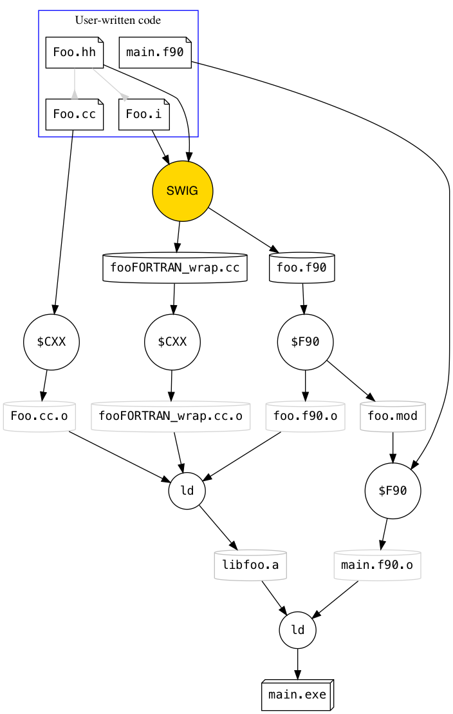

title: “SWIG and Fortran” header-includes:
This chapter describes how to create interfaces to C and C++ data and functions in the target language of Fortran, a long-lived scientific programming language. The original motivation for adding the Fortran language to SWIG was to provide an automated means of adapting massively parallel scientific codes to modern solvers and GPU-accelerated kernels in the Trilinos numerical library package (ForTrilinos). But adding Fortran as a SWIG target language has the potential to simplify and accelerate numerous existing Fortran codes that do not require advanced numerical solvers: it is now tremendously simple to generate Fortran library modules from existing C and C++ libraries.
SWIG differs from other attempts to couple C/C++ and Fortran in that it is designed to provide C and C++ functionality to Fortran, and not to generically make these two languages (or others like Python) interoperable. SWIG only parses C and C++ code; it does not parse Fortran code or generate C/C++ interfaces to Fortran libraries. SWIG assumes that you, the library developer, have an existing, working C/C++ interface that you wish to adapt to the Fortran target language. This adaptation may include tweaks for ease of use or familiarity for Fortran users, but it does not require that your library be developed around a central interface language. This is in contrast to other existing cross-language interoperability tools such as Babel.
The purpose of running SWIG with the -fortran language option is to generate a Fortran module that can be used by other Fortran code. This module contains automatically generated code that provides a Fortran interface to existing C or C++ interfaces. SWIG generates a .f90 Fortran module file, and a separate _wrap.c or _wrap.cxx file of implementation code that the module must link against.
The C/C++ _wrap file contains simple, flat, C-linkage interface functions that provide access to arbitrarily complicated C/C++ data and functions. The conversion may be as simple as casting one integer type to another, or as complicated as allocating a piece of memory and calling a function to translate an object. These interface functions, which are namespaced with a _wrap prefix, translate the C/C++ data (classes, enumerations) into simple ANSI C types (integers, structs).
The C function signature of those interfaces is translated to private interface declarations (with a swigc_ prefix rather than _wrap) in the Fortran module to bind(C) functions. These interfaces use only data types compatible with Fortran 2003’s ISO_C_BINDING features. Those bound interface functions are called by SWIG-generated Fortran wrapper code that converts C-compatible data types to native Fortran data types.
These two layers of translation allow nontrivial C++ datatypes to be translated to arbitrary Fortran data. For example, std::string objects can be automatically converted to Fortran character(len=:), allocatable variables.
Besides translating simple data types, SWIG can generate “proxy classes” in Fortran from C++ classes. These thin Fortran 2003 “derived type” definitions bind a C++ class instance to a Fortran-friendly object equivalent.
The terminology in C/C++ and Fortran is different enough to be potentially confusing to a user not intimately familiar with both languages. The author is more familiar with C++ than Fortran but has endeavored to use the correct Fortran terms when describing the Fortran implementation. The following table presents some equivalent concepts and names in the two languages:
| C/C++ | Fortran |
|---|---|
| struct/class | derived type |
| function | procedure |
| virtual member function | type-bound procedure |
| function that returns void | subroutine |
| function that returns non-void | function |
| overloaded function | generic interface |
| floating point number | real |
| arithmetic type | intrinsic type |
| derived type | extended type |
| function parameters | dummy arguments |
constexpr variable |
named constant |
C and C++ have different rules for identifiers (i.e. variable names, function names, class names) than Fortran. The following restrictions apply to Fortran that do not apply to C and C++:
The Fortran SWIG module implements two mitigation techniques for naming. First, it automatically moves leading underscores (and any following integers) to the end of the name. Second, it replaces the tails of long identifiers with a hashed value of the removed characters. If the result is a duplicate of an existing Fortran symbol, then SWIG will raise an error and inform you of the conflicting name and where it was previously used. This behavior mirrors that of Java and other statically typed languages.
For class member functions and enumerations, symbol conflicts will not error out but rather ignore the conflicting symbol and print a warning. This reduces the amount of manual intervention needed to build a working SWIG wrapper and reflects the behavior of the Go language wrappers. Whether or not a Fortran name conflict raises an error, the flexible %rename directive can be used to resolve conflicting wrapper names.
Finally, Fortran 2003 has no analog of C++ namespaces: all wrapped symbols are placed in the Fortran module’s “global” namespace.
Suppose that we have a SWIG interface file example.i with the following contents:
/* File: example.i */
%module example
%{
/* include header */
#include "cexample.h"
%}
%include "cexample.h"
where cexample.h contains the simple function declaration:
int fact(int n);To generate SWIG Fortran wrappers for this file, run
$ swig -fortran example.iand SWIG will create two files: a C interface file containing something like
/* SNIP */
/* include header */
#include "cexample.h"
/* SNIP */
SWIGEXPORT int _wrap_fact(int const *farg1) {
int fresult;
int arg1;
int result;
arg1 = *farg1;
result = (int)fact(arg1);
fresult = result;
return fresult;
}
/* SNIP */and a Fortran interface file with something like:
module forexample
use, intrinsic :: ISO_C_BINDING
implicit none
public :: fact
private
interface
function swigc_fact(farg1) &
bind(C, name="_wrap_fact") &
result(fresult)
use, intrinsic :: ISO_C_BINDING
integer(C_INT) :: fresult
integer(C_INT), intent(in) :: farg1
end function
end interface
contains
function fact(n) &
result(swig_result)
use, intrinsic :: ISO_C_BINDING
integer(C_INT) :: swig_result
integer(C_INT), intent(in) :: n
integer(C_INT) :: fresult
integer(C_INT) :: farg1
farg1 = n
fresult = swigc_fact(farg1)
swig_result = fresult
end function
end module forexample
The above contrived example uses different names for the %module declaration, the interface .i file, and the wrapped C header .h file to illustrate how these inputs affect the output file names and properties:
%module example declaration in the SWIG interface file resulted in the file names forexample.f90 and the name in module forexample.example.i resulted in the C wrapper file by default being named example_wrap.c.#include command was explicitly inserted into the C wrapper file example_wrap.c.%include command in the .i file directed SWIG to parse the header file cexample.h and generate an interface for the function declaration that it discovered.
The typical convention is to keep these names consistent: almost without exception, the module name %module example should be reflected in the file name as example.i.
In the generated C wrapper code above, int _wrap_fact(int const *farg1) is the wrapper code generated by SWIG to provide a Fortran-compatible interface with the C function fact; the function swigc_fact(farg1) interface in Fortran is the exact equivalent of that C function; and the “public” function fact in the contains section of the Fortran module is the Fortran proxy function generated by SWIG.
Note that since this function takes and returns simple data types, the C and Fortran wrapper functions have some code that could be easily simplified by hand. (A compiler with optimization enabled automatically does this, in fact.) However, for more complicated data types, SWIG shows its power by generating complex expressions that seamlessly translate between C and Fortran data types without requiring user intervention.
Several examples are provided in the SWIG source code under Examples/fortran/. In the barefunctions example, the Fortran main program can be compiled using the following sequence of commands:
swig -fortran -c++ example.i
$CXX -c example_wrap.cxx
$CXX -c example.cxx -o examplecxx.o
$FC -c example.f90
$FC runme.f90 example.o example_wrap.o examplecxx.o -lstdc++ -o run.exe
Note that since this was a statically linked C++ program, the -c++ option must be passed to SWIG and -lstdc++ must be passed to the final link command. Also note that the three middle commands, which create object files, can be executed in any order. Because the swig command generates both bare_wrap.cxx and bare.f90, it must be first. The final executable command, which links against all three generated object files, must be last.
The figure below shows how C++, SWIG, and Fortran code can be integrated into libraries and linked to form executables. The file icons are user-written files; circles are executables; flat cylinders are generated on-disk files; and the final box is the executable. The arrow signifies “generates” or “is used by.”

The Fortran SWIG module relies on Fortran 2003’s C interoperability features, both the ISO_C_BINDING intrinsic module and the specifications of the standard. Every effort has been made to conform to the standard in the translation layer between C++ and Fortran and to eliminate potential pitfalls of interoperability.
We anticipate that future extensions of Fortran/C interoperability will increase the capability of the SWIG wrapper interface. For example, the Fortran ISO technical specification TS29113 will greatly expand the types of arrays and pointers that can be passed between C and Fortran.
However, many features of C and C++ are outside the scope of Fortran’s interoperability features. Even some features that are interoperable, such as enumerations and structs, have capabilities that do not map between the two languages. With this SWIG module we attempt to extend the Fortran/C++ mapping as much as possible, keeping in mind that Fortran and C are inherently different languages.
SWIG maps ISO C types to Fortran types using the ISO_C_BINDING intrinsic module. The data types fully supported by C, Fortran, and SWIG are:
| C type | Fortran type |
|---|---|
signed char |
integer(C_SIGNED_CHAR) |
short |
integer(C_SHORT) |
int |
integer(C_INT) |
long |
integer(C_LONG) |
long long |
integer(C_LONG_LONG) |
size_t |
integer(C_SIZE_T) |
float |
real(C_FLOAT) |
double |
real(C_DOUBLE) |
char |
character(C_CHAR) |
References to these basic types are returned as scalar Fortran pointers.
Note that because the C return value does not contain any information about the shape of the data being pointed to, it is not possible to directly construct an array from a pointed-to value. However, advanced typemaps can be constructed (and indeed are provided with the SWIG Fortran standard library) that can return that information or extend the Fortran interface to obtain the additional information needed to return an array pointer.
Fortran has no intrinsic unsigned datatypes, so the specification says to treat unsigned datatypes as their signed counterparts. Note that this means unsigned char will be wrapped as a Fortran integer by default.
No checking for negativity or boundedness is done when converting the datatypes. In part this is because intentionally out-of-range values (e.g., static_cast<size_t>(-1)) are often used as sentinels.
A more complete set of typemaps for the full set of integer types available in <stdint.i> can be used by %include <cstdint>.
The astute reader may notice the omission of C_BOOL from the above table. Because of the different treatment of booleans in C and Fortran, guaranteeing the sizes of the bool are equivalent in the two languages does not guarantee the equivalence of their values. See this discussion topic for details of the subtle compatibility, but in brief, Fortran’s .true. is defined by having the least significant bit set to 1, whereas C defines it as any nonzero value. So the value 2 would be true in C but false in Fortran. A special typemap inserts wrapper code to explicitly convert booleans between the two languages.
Complex numbers (sum of real and imaginary components on the complex plane) are supported natively by Fortran as the complex datatype, in C99 and higher by the _Complex or complex types, and in C++ by the std::complex template class. Each of the three datatypes is specified to have the same data layout as a two-element array, so they can be reinterpret-cast freely across language barriers.
To enable SWIG translation of complex types to and from Fortran, simply include complex.i for C or C++ support. The following translations are performed automatically:
| C type | C++ type | Fortran type |
|---|---|---|
float _Complex |
std::complex<float> |
complex(C_FLOAT_COMPLEX) |
double _Complex |
std::complex<double> |
complex(C_DOUBLE_COMPLEX) |
Arrays of these types can also be transformed seamlessly.
Since char*, const char[], etc. typically signify character strings in C and C++, the default behavior of these is to convert to native Fortran strings (see the Strings section). To restore the “arithmetic” behavior of a character type – i.e., you want to make a char * returned by a C function into a Fortran character(C_CHAR), pointer – you can call an internal macro and apply it to the particular function or argument you need:
typedef char NativeChar;
%fortran_intrinsic(NativeChar, character, C_CHAR)
%apply NativeChar * { char *get_my_char_ptr };
char *get_my_char_ptr();C mutable references are treated as Fortran pointers. Suppose a C function that returns a reference to an array element at a given index:
double &get_array_element(int x);This generates the following Fortran interface:
function get_array_element(x) &
result(swig_result)
use, intrinsic :: ISO_C_BINDING
real(C_DOUBLE), pointer :: swig_result
integer(C_INT), intent(in) :: x
type(C_PTR) :: fresult
integer(C_INT) :: farg1
farg1 = x
fresult = swigc_get_array_element(farg1)
call c_f_pointer(fresult, swig_result)
end functionTo set the element at array index 2 to the value 512,
real(C_DOUBLE), pointer :: rptr
rptr => get_array_element(2)
rptr = 512.0d0
Note, and this is very important, that a function returning a pointer must not be assigned; the pointer assignment operator => must be used.
Unlike mutable references, const references to primitive arithmetic types are treated as values:
const double &get_const_array_element(int x);will generate
function get_const_array_element(x) &
result(swig_result)
use, intrinsic :: ISO_C_BINDING
real(C_DOUBLE) :: swig_result
integer(C_INT), intent(in) :: x
real(C_DOUBLE) :: fresult
integer(C_INT) :: farg1
farg1 = x
fresult = swigc_get_const_array_element(farg1)
swig_result = fresult
end functionwhich must be called like
real(C_DOUBLE) :: rval
rval = get_const_array_element(2)Combining the two examples, you could copy the value of element 3 to element 2 with the following code block:
real(C_DOUBLE), pointer :: rptr
rptr => get_array_element(2)
rptr = get_const_array_element(3)First the pointer is assigned, then the pointed-to data is assigned.
A long-standing difficulty with Fortran/C interaction has been the two languages’ representation of character strings. The size of a C string is determined by counting the number of characters until a null terminator \0 is encountered. Shortening a string requires simply placing the null terminator earlier in the storage space. In contrast, the historical Fortran string is a sequence of characters sized at compile time: representing a smaller string at run time is done by filling the storage with trailing blanks. The Fortran intrinsic LEN_TRIM returns the length of a string without trailing blanks, and the TRIM function is used if necessary to return a string with those trailing blanks removed. Of course, this definition of a string means 'foo' and 'foo ' are equivalent.
Starting with Fortran 90, strings with an unambiguous size can be dynamically allocated:
character(len=:), allocatable :: mystring
allocate(character(len=123) :: mystring)
and the length is given by LEN(mystring).
SWIG injects small helper functions that convert between strings and arrays of characters, which are then passed through the interface layer to C. Because the actual Fortran string length is passed to C during this process, character arrays with the null character can be converted to byte objects without unexpected string truncation.
The default char* typemaps assume that both the input and output are standard null-terminated C strings on the C++ side, and a variable-length native string on the Fortran side (i.e. any trailing blanks are intentional). Note that by using null-terminated strings, if a Fortran string has null characters embedded in it, the string will be truncated when read by C. Thus the function as written is not suitable for passing binary data between C and Fortran. See byte strings for how to do this.
If a function char* to_string(float f); emits a malloc’d string value, and the output is to be wrapped by SWIG, use the %newobject feature to avoid memory leaks:
%newobject to_string;
char *to_string(float f);The Fortran-to-C string translation performs the following steps:
len(string) + 1C_NULL_CHARC_LOC and the size to a small SwigArrayWrapper structThe C-to-Fortran string translation is similar:
strlen to save the string length to SwigArrayWrapper.size, and save the pointer to the data; return this struct to FortranC_F_POINTER to reinterpret the opaque C pointer as a character arraysize member%newobject feature applies, call the C-bound free function.
The intermediate step of allocating and copying an array is one way of circumventing Fortran 2003’s interoperability specifications, which prohibit using C_LOC on variables with length type parameters. An alternative method used in some existing C-Fortran interfaces is to define the bind(C) interface with character(kind=C_CHAR, len=*) as the dummy argument, which is allowed by the standard. This interface must however be called with a new copy of the string (with C_NULL_CHAR) appended and strlen must be used on the C++ side to determine the string’s length. (Credit to Richard Weed for pointing out this alternate solution.)
Finally, note that a warning on char * still applies to Fortran: if a function taking a char * modifies the contents of that string, the resulting modification will not have any effect on the Fortran string.
Array types such as int a[10] and Object b[][2] are, like other SWIG languages, treated as opaque types. Use the fixed-size array translation capability to interact with fundamental-arrays as built-in native Fortran arrays.
SWIG provides a two-argument typemap for converting fixed-length byte sequences, useful for passing buffers of binary data. This typemap searches for two consecutive function arguments called (char *STRING, size_t LENGTH); but like any other SWIG typemap it can be applied to other argument names as well:
%apply (char *STRING, size_t LENGTH) { (const char *buf, size_t len) }
void send_bytes(int dst, const char *buf, size_t len);can be used in Fortran as:
call send_bytes(123, "these are" // c_null_char // " some bytes")The function will be passed the actual length of the byte string (9 + 1 + 10) in addition to the raw data, including the embedded null character. Compare this to
void send_bytes(int dst, const char *buf);
which would treat buf as a C string, use strlen to find its length, and truncate it at the first null character (for a length of 9).
Each wrapped C++ class or struct produces a corresponding derived type in the wrapper code that holds a type(C_PTR) that points to an existing C++ class instance. SWIG seamlessly translates these derived type instances to and from their C++ equivalent.
SWIG wraps classes and structs identically. After all, in C++, the only difference between a struct and a class is the default access specifier: public for struct and private for class. As with the rest of SWIG, only public methods and data are wrapped.
Like the other SWIG strongly typed target languages, the compiler enforces type checking between data types and function arguments in the SWIG-generated Fortran code.
Fortran 2003 implements C enumerations using the ENUM, BIND(C) statement. These enumerators are simply a set of loosely grouped compile-time integer constants that are guaranteed to be compatible with C enumerators. Unlike C, and C++, all enumerators in Fortran are anonymous. They are simply integers and cannot be associated with a type.
To associate a C enumeration name with the Fortran generated wrappers, SWIG generates a named constant with the C enumeration name whose value is the “kind” of the corresponding integer. This value can then be used as the kind parameter of the integer. The enumeration generated from the C code
enum MyEnum {
RED = 0,
GREEN,
BLUE,
BLACK = -1
};looks like:
enum, bind(c)
enumerator :: RED = 0
enumerator :: GREEN
enumerator :: BLUE
enumerator :: BLACK = -1
end enum
integer, parameter, public :: MyEnum = kind(RED)
These enumerators are treated as standard C integers in the C wrapper code code. In the Fortran wrapper code, procedures that use the enumeration use the type integer(MyEnum) to clearly indicate what enum type is required.
Some C++ enumeration definitions cannot be natively interpreted by a Fortran compiler, so these are defined in the C++ wrapper code and bound as link-time constants in the Fortran wrapper code.
enum MyWeirdEnum {
FOO = 0x12,
BAR = sizeof(int)
};becomes
integer(C_INT), protected, public, &
bind(C, name="_wrap_MyWeirdEnum_FOO") :: FOO
integer(C_INT), protected, public, &
bind(C, name="_wrap_MyWeirdEnum_BAR") :: BAR
integer, parameter :: MyWeirdEnum = C_INT
SWIG will only automatically wrap enums as native Fortran enumerators under a limited set of circumstances. The %fortranconst directive can be used to explicitly enable the native (compile-time constant), and the %nofortranconst directive forces the values to be wrapped as externally-bound C integers (link-time constant). See the section on global constants for more on this directive.
Class-scoped enumerations are prefixed with the class name:
struct MyStruct {
enum Foo {
Bar = 0
};
};generates
enum, bind(c)
enumerator :: MyStruct_Foo_Bar = 0
end enum
integer, parameter :: MyStruct_Foo = kind(MyStruct_Foo_Bar)
If using C++11, enum class will scope the enumerations by the enum class’s name:
enum class Foo {
Bar = 0
};becomes
enum, bind(c)
enumerator :: Foo_Bar = 0
end enum
integer, parameter, public :: Foo = kind(Foo_Bar)and
class Cls {
public:
enum class Foo {
Bar = 0
};
};becomes
enum, bind(c)
enumerator :: Cls_Foo_Bar = 0
end enum
integer, parameter, public :: Cls_Foo = kind(Cls_Foo_Bar)
A constant declaration can be wrapped as a Fortran named constant (a compile-time value defined by having the parameter attribute) or as an externally linked data object. Constants can be declared with:
the SWIG %constant directive,
simple #define macros,
enum values, and
constexpr global variables. The last item is a SWIG-Fortran extension. For an explanation of this behavior, see the “Compatibility note” under “A brief word about const” in the SWIG documentation. Note that this list does not include global const data, which is wrapped in the same way as mutable global data (though without the setter functions).
Native enum values (enum is marked %fortranconst or was determined automatically to be native compatible) will become enumerators, and the enum type becomes a named constant with value C_INT.
Constants marked with %fortranconst will be rendered as named constants.
Non-native enum values become C-bound external constants.
Constants marked with %fortranbindc also become C-bound external constants.
All other types will generate getter functions that return native Fortran types.
Some compile-time constants can have definitions that are valid C but invalid Fortran. A macro whose definition cannot be parsed by Fortran can have its value replaced with a simpler expression using the %fortranconstvalue directive.
The following example shows the behavior of the various rules above:
%fortranconst fortranconst_int_global;
%fortranconst fortranconst_float_global;
%constant int fortranconst_int_global = 4;
%constant float fortranconst_float_global = 1.23f;
%fortranbindc constant_int_global;
%constant int constant_int_global = 4;
%constant float constant_float_global = 1.23f;
%fortranconstvalue(4) MACRO_HEX_INT;
%inline %{
#define MACRO_INT 4
const int extern_const_int = 4;
#define MACRO_HEX_INT 0x4
%}will be translated to
integer(C_INT), parameter, public :: fortranconst_int_global = 4_C_INT
real(C_FLOAT), parameter, public :: fortranconst_float_global = 1.23_C_FLOAT
integer(C_INT), protected, public, &
bind(C, name="_wrap_constant_int_global") :: constant_int_global
real(C_FLOAT), protected, public, &
bind(C, name="_wrap_constant_float_global") :: constant_float_global
integer(C_INT), protected, public, &
bind(C, name="_wrap_MACRO_INT") :: MACRO_INT
public :: get_extern_const_int
integer(C_INT), parameter, public :: MACRO_HEX_INT = 4_C_INT
The symbols marked as protected, public, bind(C) have their values defined in the C wrapper code, where any valid expression can be parsed. The get_extern_const_int wrapper function is a SWIG-generated getter that returns the external value.
String constants without special characters (a backslash or anything that must be escaped with a backslash) with a can generally be represented exactly in Fortran:
%fortranconst MSG_STRING;
%inline %{
#define MSG_STRING "This is a string"
%}will generate
character(kind=C_CHAR, len=*), parameter, public :: MSG_STRING = "This is a string"
It is possible to pass function pointers between C and Fortran using SWIG. When wrapping, SWIG will automatically generate abstract interface functions and subroutines for function pointers that have ISO C-compatible signatures. It then uses those interfaces in the wrapper functions as procedure pointers.
These abstract interfaces get default names that are not very pretty, so a %fortrancallback feature has been introduced to explicitly generate abstract interfaces with a meaningful name and dummy argument names
The following C++ SWIG input:
%fortrancallback("%s") binary_op;
extern "C" {
int binary_op(int left, int right);
}generates the following interface:
abstract interface
function binary_op(left, right) bind(C) &
result(fresult)
use, intrinsic :: ISO_C_BINDING
integer(C_INT), intent(in), value :: left
integer(C_INT), intent(in), value :: right
integer(C_INT) :: fresult
end function
end interfaceThis allows C++ functions
%inline %{
typedef int (*binary_op_cb)(int, int);
int call_binary(binary_op_cb fptr, int left, int right);
%}to generate Fortran functions that take a procedure as an argument:
function call_binary(fptr, left, right) &
result(swig_result)
use, intrinsic :: ISO_C_BINDING
integer(C_INT) :: swig_result
procedure(binary_op) :: fptr
integer(C_INT), intent(in) :: left
integer(C_INT), intent(in) :: right
! <snip>
end function
Note that Fortran ISO C rules require the given procedure to be defined in Fortran using the bind(C) qualifier, as in this module-level code:
function myexp(left, right) bind(C) &
result(fresult)
use, intrinsic :: ISO_C_BINDING
integer(C_INT), intent(in), value :: left
integer(C_INT), intent(in), value :: right
integer(C_INT) :: fresult
fresult = left ** right
end function
When a modifier such as [] or * is applied to a type, the result is a distinct type: int[3] is distinct from int*. Some of these resulting types have built-in typemaps for translating to Fortran, but some do not.
Types that do not match any defined typemaps are wrapped with an opaque derived type with an automatically generated name that starts with SWIGTYPE_. This type-safe placeholder carries a pointer to the value that can be transferred between functions in the same module.
Most combinations of pointers and references (such as int**, int* const*, int*[3], int*&) are treated as these opaque pointers. If it’s not possible to define a meaningful typemap for any of these types, you can use an %inline block to provide a helper function to translate them. For example,
double** get_handle();will generate a function with the signature
function get_handle() result(swig_result)
use, intrinsic :: ISO_C_BINDING
type(SWIGTYPE_p_p_double) :: swig_result
end functionYou could define a function to convert the resulting opaque class into a native Fortran pointer:
%inline %{
double &handle_to_pointer(double **val) {
return **val;
}
%}that would return a native Fortran pointer to the data referenced by the handle:
function handle_to_pointer(val) result(swig_result)
use, intrinsic :: ISO_C_BINDING
real(C_DOUBLE), pointer :: swig_result
class(SWIGTYPE_p_p_double), intent(in) :: val
end functionThis section describes the wrapper and proxy code generated by C and C++ language features.
Functions in C/C++ are procedures in Fortran. Their arguments correspond directly between the two languages: one argument in the C code requires one argument in the Fortran proxy. (Two exceptions are that C arguments can be ignored by swig using the %typemap(in, numinputs=0) directive in SWIG, and that SWIG supports multiple-argument typemaps.) A function in C/C++ with a void return value will translate to a subroutine in Fortran, and a function returning anything else will yield a Fortran function.
Each function in SWIG has a unique “symbolic name” or symname bound to it. The symname must be compatible with C linkage, and thus namespaces, templates, and overloads are incorporated into the symname, but a symname is often just the same as the bare function name.
SWIG will generate a C-linkage wrapper function in the C++ file named _wrap_$symname, where $symname is replaced with the symname. This wrapper function is responsible for converting the function’s arguments and return value to and from Fortran-compatible datatypes and calling the C++ function. It also implements other optional features such as exception handling.
SWIG then creates an interface declaration swigc_$symname, with bind(C, name='_wrap_$symname').
In the Fortran module, SWIG generates a public procedure $symname that translates native Fortran data types to and from the C interface datatypes. This interface, and not the swigc_$symname bound function, is the one used by Fortran application codes.
There is an important exception to the naming scheme described above: function overloading, when two or more free functions share a name but have different arguments. For each overloaded function signature, SWIG generates a private procedure with a unique symname. These procedures are then combined under a separate module procedure that is given a public interface with the original symbolic name. For example, an overloaded free function myfunc in C++ will generate two private procedures and add an interface to the module specification:
public :: myfunc
interface myfunc
module procedure myfunc__SWIG_0, myfunc__SWIG_1
end interface
It should be noted that a function that returns void cannot be overloaded with a function that returns anything else: generic interfaces must be either all subroutines or all functions. The pair of declarations
void cannot_overload(int x);
int cannot_overload(int x, int y);
will generate a SWIGWARN_LANG_OVERLOAD_IGNORED warning and ignore the second function. There are three ways to mitigate this warning:
%warnfilter(SWIGWARN_LANG_OVERLOAD_IGNORED) cannot_overload;%ignore cannot_overload(int x);int-returning function into a Fortran subroutine using the %fortransubroutine directive, which converts the return value to an optional argument.
The %fortransubroutine directive can be used to transform any return value (with the current limitation that the value isn’t a wrapped class) to an optional subroutine argument. For example,
int myfunc(int x, int y);
%fortransubroutine mysub;
int mysub(int x, int y);generates the function interfaces
function myfunc(x, y) &
result(swig_result)
use, intrinsic :: ISO_C_BINDING
integer(C_INT) :: swig_result
integer(C_INT), intent(in) :: x
integer(C_INT), intent(in) :: y
end function
subroutine mysub(x, y, swig_result)
use, intrinsic :: ISO_C_BINDING
integer(C_INT), intent(in) :: x
integer(C_INT), intent(in) :: y
integer(C_INT), intent(out), optional :: swig_result
end subroutineThe resulting subroutine can be overloaded with other C++ void-returning functions.
A common use case of %fortransubroutine is for C functions that return error codes or other noncritical information such as the number of items deleted. C++ users should know that a function in Fortran is a stronger version of a [[nodiscard]]-marked function (since C++17): ignoring the return value is an error.
Global variables in SWIG are wrapped with “getter” and “setter” functions. In the case of a global C++ variable
namespace foo {
extern int global_counter;
}SWIG will generate functions with interfaces
subroutine set_global_counter(value0)
use, intrinsic :: ISO_C_BINDING
integer(C_INT), intent(in) :: value0
end subroutineand
function get_global_counter() &
result(swigf_result)
use, intrinsic :: ISO_C_BINDING
integer(C_INT) :: swigf_result
end functionAlthough no type conversion is needed for simple integers, other global data types would require special wrapper code in these functions.
By default, global C/Fortran-compatible variables are treated the same as more complicated C++ types. However, the %fortranbindc feature allows natively interoperable types to be directly accessed in the Fortran code. A SWIG input of:
%fortranbindc global_counter_c;
extern "C" int global_counter_c;will generate a publicly accessible C-bound variable:
integer(C_INT), public, bind(C, name="global_counter_c") :: global_counter_cC++ classes are transformed to Fortran derived types. These types have type-bound procedures that mirror the C++ member functions. Other SWIG target languages refer to the transformed wrapper classes as “proxy classes” because they act as a proxy to the underlying C++ class.
The Fortran “proxy class” is effectively a C pointer with memory management metadata and type-bound accessors. The C pointer is initialized to C_NULL_PTR, and when assigned it can represent a class as a value (i.e. the local Fortran code has ownership) or by reference. The classes and their implementation are described in detail in the proxy classes section.
By default, a C++ exception will call std::terminate, abruptly stopping the Fortran program execution. With the %exception feature, C++ exceptions can be caught and handled by the Fortran code by setting and clearing an integer flag. The following snippet from the Examples directory illustrates its use in printing and ignoring an error:
use except, only : do_it, ierr, get_serr
call do_it(-3)
if (ierr /= 0) then
write(0,*) "Got error ", ierr, ": ", get_serr()
ierr = 0
endif
Enabling this exception handling requires %includeing a special file and writing a small exception handler.
%include <std_except.i>
%exception {
// Make sure no unhandled exceptions exist before performing a new action
SWIG_check_unhandled_exception();
try {
// Attempt the wrapped function call
$action
} catch (const std::exception& e) {
SWIG_exception(SWIG_RuntimeError, e.what() );
} catch (...) {
SWIG_exception(SWIG_UnknownError, "An unknown exception occurred");
}
}
%inline %{
#include <stdexcept>
void do_it(int i)
{
if (i < 0) throw std::runtime_error("Bad value");
}
%}
The above code will wrap (by default) every function call. (The standard SWIG %noexception directive can be used to selectively disable exception handling.) Before calling the wrapped function, the call to SWIG_check_unhandled_exception ensures that no previous unhandled error exists. If you wish to wrap only a few functions with only specific exceptions, use the “throws” typemap.
The error codes (SWIG_RuntimeError, etc.) above will be generated as public Fortran parameter constants when using the <exception.i> header. Thus you can check for more specific errors as needed:
b = get_from_reference(a)
if (ierr == SWIG_NullReferenceError) then
write(0,*) "'a' must be allocated before passing to 'get_from_reference'"
stop 1
endif
When exception handling code is used, SWIG generates a few internal data structures as well as two externally accessible symbols with external C linkage (ierr and get_serr). Fortran bindings are generated to make the integer and function accessible from the Fortran module.
The names of the integer and string accessor have C linkage and thus must be unique in a compiled program and to all downstream codes linked against it. Since other translation units might have symbols that share the default exception handling names, the user can provide custom names before including the exception handling file. A %rename directive can then reset the Fortran proxy name to something simpler while retaining the scoped C linkage variable names.
In this example, the C-linkage variables generated will be _scoped_ierr and _scoped_get_serr:
%module foo;
#define SWIG_FORTRAN_ERROR_INT scoped_ierr
#define SWIG_FORTRAN_ERROR_STR scoped_get_serr
%rename(ierr) scoped_ierr;
%rename(get_serr) scoped_get_serr;
%include <std_except.i>but because of the %rename directives, they can still be accessed from Fortran with simpler names since they are “scoped” to the generated module:
use foo, only : ierr, get_serr
If you’re linking multiple modules together (using %import or otherwise), only one of those modules should define the error integer and accessor by including <std_except.i> or <exception.i>. Every other module needs to add
%include <extern_exception.i>
before any other module is %imported (or any other exception-related source files are %included). This inserts the correct exception macros in the wrapper code and declares (but does not define) the external-linkage error function and variable. You must also ensure the SWIG_FORTRAN_ERROR_INT macro is correctly defined before this include if it’s being used upstream.
If you forget to make the above inclusion and an %imported module loads exception.i, a SWIG error will be displayed with a reminder of what to do. If all of your modules declare extern_exception.i, the program will fail to link due to the undefined symbols.
There are many ways to make C++ data types interact more cleanly with Fortran types. For example, it’s common for C++ interfaces take a std::string when they’re typically called with string literals: the class can be implicitly constructed from a const char * but can also accept a std::string if needed. Since Fortran has no implicit constructors, passing a string argument would typically require declaring and instantiating a class for that parameter. Instead, like other SWIG languages, Fortran by default integrates “native” types such as the built-in string and arrays.
A special set of typemaps is provided that transparently converts native Fortran character strings to and from std::string classes. It operates essentially like the C strings described above: it can transparently convert strings of data to and from native Fortran strings. This typemap is provided in <std_string.i>.
The default typemaps do not include support for mutable string references; by default they are treated as unknown class types. To make these references act like pass-by-value strings (where changes to the value in one language will not make changes in the other), use %apply:
%include <std_string.i>
%apply std::string { std::string& }
The C++ std::vector class is defined in the <std_vector.i> interface file along with its basic methods. Similarly to other statically-typed languages such as Java, the vector class has no automatic conversions to and from the native Fortran array types.
To be congruent to native Fortran types, the vector wrapper functions use 1-offset indexing by default. That is, instead of index 0 meaning an offset of zero from the start of the array, index 1 indicates the “1st” element of the array. Also for improved compatibility, native Fortran integers are used for sizing and indexing into the array.
The built-in std::vector wrapper class differs from the standard C++ library in that instead of operator[], assignment and retrieval use set(index, value) and get(index). Similarly, insert, remove, and erase all use 1-offset Fortran integers rather than iterators.
If changing the indexing offset is abhorrent to you, or you expect your Fortran integers to be 32-bit in app with vector sizes greater than 2 billion, fear not. Those two features are implemented with %apply typemaps, so applying the following typemap before instantiating vector<CTYPE> will restore the vector’s natural C++ behavior.
%apply size_t {std::vector<CTYPE>::size_type,
std::vector<CTYPE>::size_type index,
std::vector<CTYPE>::size_type start_index,
std::vector<CTYPE>::size_type stop_index};
Other useful types such as std::map, std::set, have no or minimal implementation. Contributions to these classes (by changes to swig/Library/fortran/std_{cls}.i) will be warmly welcomed.
Like other target languages, SWIG can generate Fortran wrappers to smart pointers to C++ objects by modifying the typemaps to that object. A smart pointer is an object whose interface mimics a raw C pointer but encapsulates a more advanced implementation that manages the memory associated with that pointer. Different libraries provide different names and interfaces to smart pointers, but the common std::shared_ptr class (and the less common boost::shared_ptr) interfaces are provided and can be easily adapted to other similar “smart pointer” types.
When a shared pointer is copied, the pointed-to object is “shared” by the two shared pointer instances, and a reference counter (which keeps track of the number of existing shared pointer instances) is incremented. A shared pointer’s reference count is decremented when its destructor is invoked, or if reset() is called on the pointer. When the reference count reaches zero, the pointed-to object is deleted.
Wrapping shared pointers with SWIG is as simple as adding the line %shared_ptr(Foo) to the source file before the definition of class Foo or the wrapping of any function that uses an instance of Foo. That macro defines all the necessary typemaps to convert a shared pointer to and from a value, raw pointer, or reference. SWIG does not require that all uses of Foo be as shared_ptr<Foo>: for example, it will correctly dereference the shared pointer when passing it into a function that takes a const reference. Additionally, because shared pointer class supports “null deleters” (i.e. when the reference count reaches zero, the pointed-to data will not be deleted), the code can embed a non-owning reference to the data in a shared pointer. In other words, it is OK to return const Foo& even when Foo is wrapped as a shared pointer.
The <typemaps.i> library file provides a simple means of passing Fortran arrays by reference. It defines a two-argument typemap (SWIGTYPE *DATA, size_t SIZE) that is wrapped as a single Fortran argument, an array of SWIGTYPE values. For functions that accept but do not modify an array of values, the const version of the signature, (const SWIGTYPE *DATA, size_t SIZE), declares the array as intent(in).
The following example shows how to apply the typemap to two different functions:
%include <typemaps.i>
%apply (SWIGTYPE *DATA, size_t SIZE) { (double *x, int x_length) };
%apply (const SWIGTYPE *DATA, size_t SIZE) { (const int *arr, size_t len) };
void fill_with_zeros(double* x, int x_length);
int accumulate(const int *arr, size_t len);These functions can then be used in Fortran target code:
real(C_DOUBLE), dimension(10) :: dbl_values
integer(C_INT), allocatable, dimension(:) :: int_values
integer(C_INT) :: summed
call fill_with_zeros(dbl_values)
summed = accumulate(int_values)
The <typemaps.i> file provides an additional typemaps that allows fixed-size Fortran arrays to interact natively with fixed-size C arrays:
%include <typemaps.i>
%apply SWIGTYPE ARRAY[ANY] { int global[4] };
%apply SWIGTYPE ARRAY[ANY][ANY] { double[ANY][ANY] };
double cpp_sum(const double inp[3][2]);
%inline %{
int global[4] = {0,0,0,0};
%}allows the Fortran usage:
integer(C_INT), dimension(4) :: int_values = [1,2,3,4]
real(C_DOUBLE), dimension(2,3) :: dbl_values
call set_global(int_values)
int_values(:) = 0
int_values = get_global()
dbl_values(:,:) = 1.0d0
write(*,*) cpp_sum(dbl_values)Note that Fortran dimensioning is column-major and C/C++ dimensions are row-major, so the dimensionality of the arrays must be reversed.
The general smart pointer functionality, where a class provides a custom operator-> and unary operator*, is not yet implemented. All C++ operator overloads are currently ignored.
The <std_span.i> library file provides an example of interacting directly with Fortran array pointers. The std::span class is proposed for C++20, so this file serves mostly as an example of array translation for other scientific software libraries that use functionally equivalent classes: storing a simple non-owning reference to a contiguous array of data.
Returning a std::span<T> yields a Fortran array pointer, and taking a reference to a span allows a Fortran array pointer to be set.
#include <std_span.i>
%template() std::span<int>;
std::span<int> get_array_ptr();
void set_array_ptr(std::span<int>& arr);
void increment(std::span<int> arr);is usable in Fortran as
integer(C_INT), pointer :: arrptr(:)
arrptr => get_array_ptr()
call set_array_ptr(arrptr)
call increment(arrptr)See the section on pointers and references for cautions on functions returning pointers.
One other note to be made about Fortran interoperability concerns the mismatch between default Fortran integers and C++’s size_type, which is often used as a function argument. The differing KIND of the integers requires that users awkwardly cast values when passing into function calls:
call my_vector%resize(INT(n,C_LONG))This nuisance can be simply avoided by replacing occurrences of C’s size type with the native Fortran integer type:
%apply int { std::size_t }
Note of course that if the native integer type is 32-bit and the long type is 64-bit, this will prevent any input larger than 0x7fffffff from being passed as an argument.
Each C++ class (with the exception of those wrapped using direct C binding) creates a “proxy class”, a unique derived type in the Fortran module. Each proxy class holds a single piece of data, a small C-bound struct SwigClassWrapper, which contains two simple members: a pointer to C-owned memory, and an enumeration that tracks the ownership of that memory. The proxy class is responsible for tracking ownership of the C++ class and associating that pointer with the corresponding C++ methods.
To introduce the class translation mechanism, we observe the transformation of a simple C++ class
class Foo {
public:
void bar();
};into a Fortran derived type
type :: Foo
type(SwigClassWrapper), public :: swigdata
contains
procedure :: bar => swigf_Foo_bar
end typeThe proxy classes that SWIG creates, and how it translates different C++ class features to Fortran, are the topic of this section.
In C++, the allocation and initialization of a class instance is (almost without exception) performed effectively simultaneously using a constructor. The initialization can be arbitrarily complex, and since the constructor can be overloaded, the instance can be allocated and initialized by several different code paths. In Fortran, initialization can only assign simple scalars and set pointers to null.
However, “construction” can be done separately. In SWIG-generated classes, a module procedure with the same name as the class initializes it:
type(Foo) :: f
type(Foo) :: g
f = Foo()
g = Foo(123)
call f%do_something()
call g%do_something_else()
Even though the Fortran 2003 standard specifies when local variables become undefined (and are finalized if they have a FINAL subroutine), support for finalization in many compilers still in active use is not entirely reliable. Rather than relying on the finalization mechanics to clean up and free a C++ object, destructors for the C++ wrappers wrapped as a release procedure:
call f%release()
call g%release()
To avoid leaking memory, release should always be called when the proxy class instance is no longer needed. It will free memory if appropriate and reset the C pointer to NULL. Calling release on an uninitialized variable (or a variable that has been released) is a null-op.
SWIG generates unique, private procedure names (generally swigf_{classname}_{funcname} for each class and function. These procedures are bound to the type. If function overloading is used, “generic” procedures will be added to the derived type.
Type-bound procedures in Fortran proxy classes are treated exactly the same as for native derived types:
integer(C_INT) :: value
type(Foo) :: food
food = Foo()
call food%do_something()
value = food%get_something()corresponding to
class Foo {
void do_something();
int get_something();
};
Function overloading for derived types is implemented using generic interfaces. Each overloaded function gets a unique internal symname, and they are bound together in a generic interface. For example, if a member function doit of class Action is overloaded, a generic binding will be generated inside the Fortran proxy derived type:
procedure, private :: doit__SWIG_0 => swigf_Action_doit__SWIG_0
procedure, private :: doit__SWIG_1 => swigf_Action_doit__SWIG_1
generic :: doit => doit__SWIG_0, doit__SWIG_1
As with free functions, a member function returning void cannot be overloaded with a function returning non-void.
SWIG generates member functions for class member data in the same way that it generates free functions for global variables. Each public member produces a “getter”, and unless the data is marked const, it generates a “setter”.
For a struct
struct Foo {
int val;
};the interface to an instance and its data is:
type(Foo) :: f
f = Foo()
call f%set_val(123)
value = f%get_val()
As in C++, the construction of Foo() default-initializes member data, so the result of f%get_val() will be zero immediately after construction.
Single inheritance in C++ is mirrored by Fortran using the EXTENDS attribute. For classes with virtual methods, the user should keep in mind that function calls are dispatched through C++. In other words, even if you call a base-class member function in Fortran that wraps a derived class instance, the correct virtual function call will be dispatched.
Fortran has no mechanism for multiple inheritance, so this SWIG target language does not support it. The first base class listed that has not been %ignored will be treated as the single parent class. A warning will be issued for the base classes that are not used as the parent class.
There is no intrinsic way to dynamic_cast to a daughter class, but if a particular casting operation is needed a small inline function can be created that should suffice:
%inline %{
Derived &base_to_derived(Base &b) {
return dynamic_cast<Derived &>(b);
}
%}(Note that this function will not transfer ownership to the new object. Doing that is outside the scope of this chapter.)
The implementation of function overloading in the Fortran types is complicated when member functions are shadowed or overridden in a daughter class. First, Fortran requires essentially that overriding procedures must have the exact same function signature including the names of the dummy arguments. (This is in part because Fortran procedures may accept arguments as keywords in addition to positions.) In contrast, overriding functions in C++ merely require the same parameter types. Second, Fortran does not allow a procedure in a parent type to be “shadowed” by the extending type as C++ does. Finally, a non-generic procedure in the parent type cannot be shadowed by a generic procedure. SWIG does its best to detect these situations and ignore incompatible member functions in the daughter class.
A single Fortran proxy class must be able to act as a value, a pointer, or a reference to a C++ class instance. When stored as a value, a method must be put in place to deallocate the associated memory; if the instance is a reference, that same method cannot double-delete the associated memory. An additional complication is that C++ functions must be able to send Fortran pointers both with and without owning the associated memory, depending on the function. Finally, assignment between Fortran classes must preserve memory association.
Fortran’s “dummy argument” for the return result of any function (including generic assignment) is intent(out), preventing the previous contents (if any) of the assignee from being modified or deallocated. In the Fortran-defined factory function
function make_foo() result(fresult)
type(Foo) :: fresult
call fresult%release() ! always a null-op
fresult = Foo(1234)
end function
the value of fresult at the start of the function is the default initialized value of Foo, and not (for example) the left-hand side of a statement when the function’s result is used.
The assignment operator must behave correctly in both of the following assignments, which are treated identically by the language:
type(Foo) :: a, b
a = make_foo()
b = a
Note that unlike Python, b is not a pointer to a; and unlike C++, b is not copy-constructed from a. Instead, a is assigned to b using the assignment(=) operator. Likewise, a is not “constructed” on the second line: there is no return value optimization as in C++. Instead, make_foo returns a temporary Foo, and that temporary is assigned to a.
Because these two assignments are treated equally and a temporary is created in only one of them, we have to be clever to avoid leaking or double-deleting memory.
Ideally, as was done in Rouson’s implementation of Fortran shared pointers, we could rely on the FINAL operator defined by Fortran 2003 to release the temporary’s memory. Unfortunately, only the very latest compilers (as of 2018, 14 years after the standard was ratified) have full support for the FINAL keyword.
Our solution to this limitation is to have the Foo proxy class store not only a pointer to the C data (self%swigdata%cptr) but also a set of state flags (self%swigdata%cmemflags) that describes memory ownership. Currently there are two flags:
swig_cmem_own_bit in Fortran wrapper code) is true if freeing the wrapper should destroy and free the corresponding C/C++ memory.rvalue bit is set (swig_cmem_rvalue_bit).
The crucial trick is to implement an assignment operator that correctly copies, allocates, or moves memory based on the flags on the left- and right-hand sides, and sets a new memory state on the recipient. By resetting the state flag in a generic assignment operator, we guarantee that only temporary classes will ever have the rvalue bit set.
TODO: clarify assignment semantics, detail the %fortran_autofree_rvalue macro
SWIG’s default Fortran type (the ftype typemap) for generic types such as classes (SWIGTYPE) is:
%typemap(ftype) SWIGTYPE "type($fortranclassname)"
The special symbol $fortranclassname is replaced by the symbolic name (i.e. the Fortran identifier in the proxy code) of the class that matches the typemap. For example, if std::vector<double> is instantiated:
%template(Vec_Dbl) std::vector<double>;
then Vec_Dbl, the name of the derived type, will replace $fortranclassname.
Some function signatures may refer to classes that are not wrapped by SWIG. Such arguments or return values will automatically generate opaque wrapper classes that are used as placeholders for that class. These placeholders are identical to those used for unusual fundamental types with fundamental types.
The Fortran wrapper code generated for each function can be extended in multiple ways besides using the fin and fout typemaps. A specific function can have code prepended to it using the %fortranprepend macro, which is a compiler macro for %feature("fortran:prepend"), and appended using %fortranappend, which aliases %feature("fortran:append").
For advanced cases, the function or subroutine invocation can be embedded in another layer of wrapping using the %feature("shadow") macro. The special symbol $action will be replaced with the usual invocation.
This section describes some of the advanced features that underpin the SWIG Fortran wrapping. These features allow extensive customization of the generated C/Fortran interface code and behavior.
SWIG Fortran extends the typemap system of SWIG with additional typemaps, modeled after the Java target language’s typemaps. They provide for translating C++ data to and from an ISO-C compatible datatype, and from that datatype to native Fortran types. These special typemaps are critical to understanding how SWIG passes data between Fortran and C++.
SWIG-generated Fortran code works by translating C++ data types to simple C types compatible with ISO C binding, then translating the data types to more complicated Fortran data types. The C-compatible types are known as the “intermediate layer”.
SWIG Fortran defines two new typemaps to declare the data types used by Fortran and C in the intermediate layer, and two typemaps for translating the intermediate layer types to and from the final Fortran types.
To pass Fortran-2003 compatible bind(C) or ISO_C_BINDING types between C++ and Fortran, you must declare a compatible ctype and imtype. The ctype is the C datatype used by the wrapper and intermediate layer, and imtype is the equivalent Fortran datatype. These datatypes generally must be either arithmetic types or structs of such types. For example, as described in the Arithmetic types section, the int C type is compatible with integer(C_INT) Fortran type. However, because Fortran prefers to pass data as pointers, SWIG defines int* as the ctype for int. Otherwise the imtype would have to be integer(C_INT), value.
The ctype and imtype each have keywords that are usually required. By default, ctype corresponds to an output value, i.e. a function return value. Often the input value of a function is a different type (e.g. a pointer int* instead of a value int). The in keyword allows this to be overridden:
%typemap(ctype, out="int") int
"const int *"
The imtype is used both as a dummy argument and as a temporary variable in the Fortran conversion code. Because these also may have different signatures, an in keyword allows the dummy argument to differ from the temporary:
%typemap(imtype, in="integer(C_INT), intent(in)") int
"integer(C_INT)"
The fin and fout typemaps are Fortran proxy wrapper code analogous to the in and out in the C wrapper code: they are used for translating native Fortran objects and types into types that can be transmitted through the ISO C intermediate code. For example, to pass a class by reference, the Fortran class class(SimpleClass) :: self is converted to the corresponding C class via the stored C pointer using the fin typemap, which is expanded to:
farg1 = self%swigdata%cptrThis argument is then passed into the C function call:
fresult = swigc_make_class(farg1)
and the output is translated back via the fout typemap, which in this case expands to:
swig_result%swigdata%cptr = fresultAdvanced SWIG users may know that
%typemap(in) int (double tempval) { /.../ }
is a way to declare a temporary variable tempval in the C wrapper code. The same feature is emulated in the temp keyword argument of fin and fout. This keyword declares a variable named $1_temp with the specified type declaration. The ffreearg typemap (analogous to the freearg typemap for C in arguments) can be used to deallocate or clean up any temporary variables as needed.
The %insert(section) %{ ...code... %} directive can be used to inject code directly into the C/C++ wrapper file (see code insertion blocks) as well as the Fortran module file. The Fortran module uses several additional sections that can be used to insert arbitrary extensions to the module. These section names are based off the Fortran standard’s specification and naming of the components of a module.
| Name | Description |
|---|---|
| C++ WRAPPER CODE | |
begin | Immediately below SWIG header comment |
runtime | Run time code (beginning of .cxx file) |
header | Header code (after runtime) |
wrapper | C++ wrapper code (middle of .cxx file) |
init | Initialization code (end of .cxx file) |
| FORTRAN WRAPPER CODE | |
fbegin | Code before the `module` statement |
fuse | "use" statements |
fdecl | Module declarations |
fabstract | Abstract interfaces for callbacks |
finterfaces | Procedure interfaces for C code |
fsubprograms | Fortran module subprograms |
The generated C++ wrapper file has the following sections denoted by {sectionname}
{begin}
{runtime}
{header}
#ifdef __cplusplus
extern "C" {
#endif
{wrapper}
#ifdef __cplusplus
}
#endif
{init}The generated Fortran module looks like:
{fbegin}
module [MODULE_NAME]
use, intrinsic :: ISO_C_BINDING
{fuse}
implicit none
private
{fdecl}
interface
{finterfaces}
end interface
contains
{fsubprograms}
end moduleIt is sometimes desirable to simply expose C functions and types to Fortran. This, for example, is one way to wrap C libraries with minimal overhead.
In addition to generating functions with translation code, it is also possible to specify that a function be directly bound and not wrapped. For this feature to work correctly, all function arguments and return types must be inherently Fortran/C interoperable, and the function must be either in C code or given C linkage via a C++ extern "C" block. The %fortranbindc and %nofortranbindc features can enable or disable the binding feature.
The SWIG code:
%fortranbindc print_sphere;
extern "C" {
// These functions are simply bound, not wrapped.
void print_sphere(const double origin[3], const double* radius);
}is translated to
subroutine print_sphere(origin, radius) &
bind(C, name="print_sphere")
use, intrinsic :: ISO_C_BINDING
real(C_DOUBLE), dimension(3), intent(in) :: origin
real(C_DOUBLE), intent(in) :: radius
end subroutineTo bind all functions as native C interfaces, use
%fortranbindc;
This is often useful when coupled with the %fortranconst directive (see the enumerations section).
The %callback feature is redundant and ignored for %fortranbindc types: a valid function pointer to the C function can be obtained simply with the c_funptr intrinsic function. Any %fortrancallback directives in the code will still generate abstract interfaces, but they will simply supplement the direct-bound C code
In certain circumstances, C++ structs can be wrapped natively as Fortran bind(C) derived types, so that the underlying data can be shared between C and Fortran without any wrapping needed. Structs that are “standard layout” in C++ can use the %fortran_struct feature to translate
struct BasicStruct {
int foo;
double bar;
};to
type, bind(C) :: BasicStruct
integer(C_INT), public :: foo
real(C_DOUBLE), public :: bar
end typeRoughly speaking, standard layout structs have no virtual member functions, inheritance, or C++-like member data. All structs in C are compatible with Fortran, unless they bit have fields or use the C99 feature of “flexible array members”.
The C binding feature for structs must be activated using a special macro %fortran_struct:
%fortran_struct(BasicStruct);In C++, these structs must be “standard layout”, i.e. compatible with C.
Calling %fortran_struct(Foo) inhibits default constructor/destructor generation for the class, and it sets up the necessary type definitions to treat the struct as a native type.
Every member of the struct must be bind(C) compatible. This is enforced with a separate typemap bindc that translates the member data to Fortran type members. For example, the basic int mappings are defined (using macros) as:
%typemap(bindc) int "integer(C_INT)"
%typemap(bindc) int * "type(C_PTR)"
%typemap(bindc) int [ANY] "integer(C_INT), dimension($1_dim0)"
%typemap(bindc) int [] = int *;
The bindc typemap is used when wrapping global constants and enumerations.
Typically when wrapping C++ libraries for Fortran, it’s desirable to expose only a subset of the library’s functionality and classes. However, even if a class is ignored, functions that use the class will still be wrapped using an opaque derived type (see unusual types), and it’s not uncommon to %ignore such functions where possible to minimize the clutter in the Fortran library’s interface. The %fortranonlywrapped feature is designed to help.
When applied to an identifier, it will ignore any function that accepts or returns a class that’s explicitly ignored or is forward-declared but not defined. For example, the following input
%fortranonlywrapped overloaded;
%ignore Ignored;
class ForwardDeclared;
void overloaded(Ignored i);
void overloaded(ForwardDeclared f);
void overloaded(int i);will generate a single Fortran wrapper function, for the one that accepts an integer argument.
Like any other feature, it can be applied globally and disabled on a case-by-case basis:
%fortranonlywrapped;
%nofortranonlywrapped should_be_wrapped;
void not_wrapped(UnknownType*);
void should_be_wrapped(UnknownType*);The “director” capability in SWIG allows C++ classes to be subclassed by a user in the target language to enable inversion of control through overridden C++ virtual functions. For Fortran, this means that a SWIG-wrapped derived type can be extended by an application code so that C++ code can send data to a native Fortran type-bound procedure and receive data back.
Enabling this advanced and still highly experimental feature requires extra SWIG directives, including a special setup argument in the %module declaration.
%module(directors="1") example
%feature("director") Base;
%inline %{
class Base {
public:
virtual ~Base() {}
virtual int apply(int x) const = 0;
};
int apply(const Base& b, int x) {
return b.apply(x);
}
%}This allows a user application to declare an extended type such as:
module mymod
use, intrinsic :: ISO_C_BINDING
use ISO_FORTRAN_ENV
use example, only : Base
implicit none
type, extends(Base), public :: MyDerived
integer(C_INT) :: multiply_by = 1
integer(C_INT) :: add_to = 0
contains
procedure :: apply => MyDerived_apply
end type MyDerived
contains
function MyDerived_apply(self, x) &
result(myresult)
use, intrinsic :: ISO_C_BINDING
class(MyDerived), intent(in) :: self
integer(C_INT), intent(in) :: x
integer(C_INT) :: myresult
myresult = x * self%multiply_by + self%add_to
end function
end moduleThe overridden procedure can be called either from Fortran or through existing C++ library code.
subroutine test_director_int
use director_simple
use director_simple_mod
use, intrinsic :: ISO_C_BINDING
type(MyDerived), target :: myclass
! Allocate and set up callbacks for Base class
call swig_initialize(myclass, source=Base())
myclass%multiply_by = 2
myclass%add_to = 1
! Direct Fortran call
ASSERT(myclass%apply(10_c_int) == 21_c_int)
! Call through C director
ASSERT(apply(myclass, 10_c_int) == 21_c_int)
call myclass%release()
end subroutineCurrently only fundamental types are supported.
Fortran has much less introspection than Java, Python, and other less static languages. Therefore director methods can’t automatically detect whether the target language (Fortran) overrides a particular method. Therefore you must currently override all virtual methods.
Note that a bug in GCC prevents versions before 8 from using the --std=f2003 flag (see GNU bug 84924).
A number of known limitations to the SWIG Fortran module are tracked on GitHub.